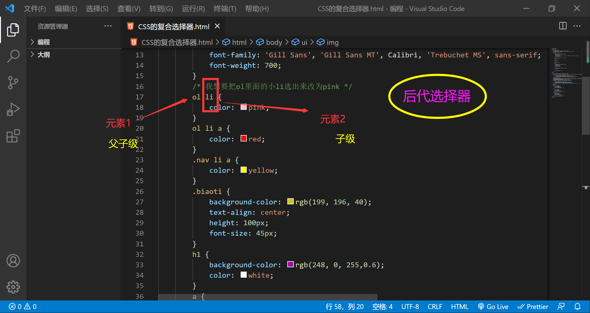
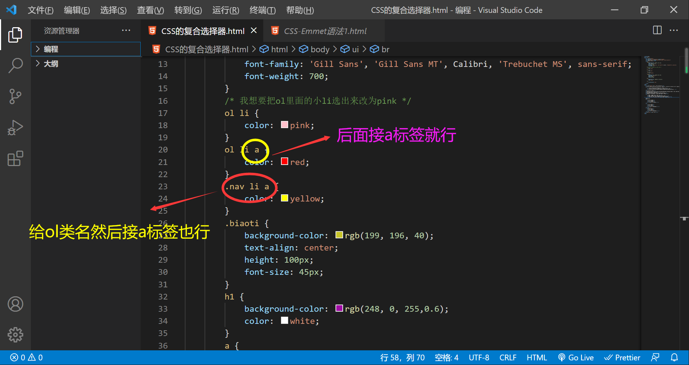
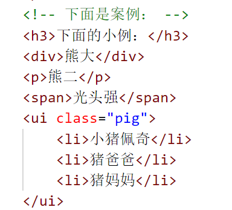
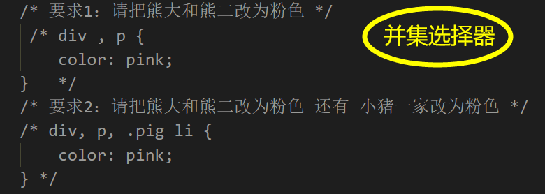

复合选择器：
在CSS中，可以根据选择器的类型把选择器分为基础选择器和复合选择器，复合选择器是建立在基础选择器之上，对基础选择器进行组合形成的。
- 复合选择器可以更准确、更高效的选择目标元素(标签)
- 复合选择器是由两个或多个基础选择器，通过不同的方式组合而成的
- 常用的复合选择器包括：后代选择器、子选择器、并集选择器、伪类选择器等等...
本页面目录：
后代选择器
子选择器
并集选择器
课后练习
1️⃣后代选择器(重要)
后代选择器又称为包含选择器，可以选择父元素里面的子元素，其写法就是把外层标签写在前面，内层标签写在后面，中间用空格分隔。当标签发生嵌套时，内层标签就成为外层标签的后代
语法：元素1 元素2 { 样式声明 }
👆上述语法表示选择元素1 里面的所有元素2（后代元素）
例如：ul li {样式声明} /* 选择ul里面所有的li标签元素 */
元素1 和元素2 中间用空格隔开
元素1 是父子级，元素2 是子级，最终选择的是元素2
元素2 可以是儿子,也可以是孙子等，只要是元素1 的后代即可


下面的小例：
- 我是ol 的孩子
- 我是ol 的孩子
- 我是ol 的孩子
- 我是孙子
我是ul 孩子
我是ul 孩子
我是ul 孩子
不会变化的
我是ul 孩子
我是ul 孩子
我是ul 孩子
不会变化的
2️⃣子选择器(重要)
子元素选择器（子选择器）只能选择作为某元素的最近一级子元素。简单理解就是选亲儿子元素
语法：元素1 > 元素2 {样式声明}
👆上述语法表示选择元素1 里面的所有直接后代（子元素）元素2
例如：div > p {样式声明} /* 选择 div 里面所有最近一级 p 标签元素 */
元素 1 和元素 2 中间用大于号隔开
元素 1 是父级，元素 2 是子级，最终选择的是元素 2
元素 2 必须是亲儿子，其孙子、重孙之类都不归他管，你也可以叫他亲儿子选择器
下面的小例：
课后练习：
1️⃣请将下面的链接文字修改为红色（后代选择器练习）
2️⃣请将下面的大肘子文字修改为红色（子选择器练习）
3️⃣并集选择器（重要）
并集选择器可以选择多组标签，同时为他们定义相同的样式。通常用于集体声明
并集选择器是各选择器通过英文逗号（，）连接而成，任何形式的选择器都可以作为并集选择器的一部分
语法：元素1 ，元素2 {样式声明}
👆上述语法表示选择元素1 和元素2
元素1 和元素2 中间用逗号隔开
逗号可以理解为和的意思
并集选择器通常用于集体声明
下面的小例：
熊大
熊二

光头强
小猪佩奇
猪爸爸
猪妈妈

返回标题